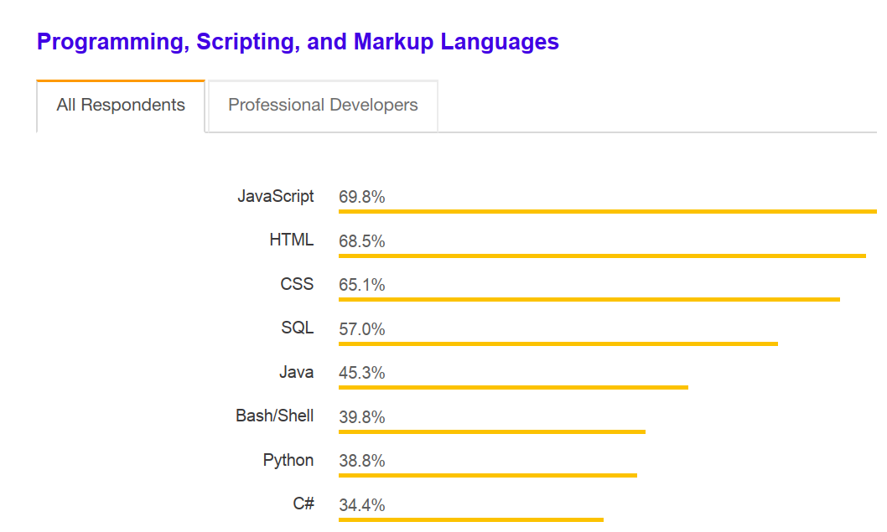

¡Muerte al JavaScript, larga vida al JavaScript!
Ricardo Sanz
sanzante / tunic

Ricardo Sanz
Drupal Developer & DevOps
drupal.org/u/tunic
sanzante
JavaScript
- Desarrollado por Brendan Eich para Netscape Communicator en 1995.
- LLamado Mocha, luego LiveScript, finalmente JavaScript.
- Prototipo desarrolado en pocas semanas.
- Sintaxis parecida a Java pero núcleo muy diferente.
- Inspirado por Scheme (funciones como objetos) y Self (herencia mediante prototipos).
- Originalmente también pensado para el servidor.
- Años oscuros: JScript.
JavaScript
- Estandarizado por ECMA.
- ECMAScript 1 (1995).
- ECMAScript 2 (1998): Pequeñas mejoras.
- ECMAScript 3 (1998): RegExp, excepciones, gestión de errores, mejora gestión de cadenas.
- XHTMLRequest.
- ECMAScript 4 (Abandonada): Grandes cambios y muchas funcionaliades nuevas.
- ECMAScript 5 (3.1) (2009): modo strict, afinación general, soporte JSON, mejora reflexibidad.
ECMAScript 6 (2015)
- Clases.
- Iteradores.
- Generadores.
- Funciones flecha.
- Promesas.
- Otras mejoras.
Uso

JavaScript
- Lenguaje multiparadigma (OOP clásico, prototipado, funcional).
- Flexible.
- Muy débilmente tipado, coerción agrevisa ("1,6" == [1,6]).
- Flexible.
- Tipado dinámico.
- Muy flexible.
- Funciones como objetos.
- Extremadamente flexible.
¡Muerte al JavaScript!
- Parece un lenguaje OOP clásico pero no lo es.
- Difícil de entender completamente.
- Depuración problemática según como se use.
- La combinación de paradigmas puede dificultar el diseño una aplicación.
- La combinación de paradigmas dificulta la comprensión del código.
- Tan flexible que es fácil dispararse en un pie. Lint.
- Difícil de mantener en proyectos medio-grandes.
- ES6 trata de solventarlo, infructuosamente (¿Clases? No del todo.)
¿Muerte?
- Por fin estandarizado y compatible en todos los navegadores.
- Ejecutable en servidor.
- Cumple la promesa: Write once, run everywhere.
- Miriada de librerías y frameworks para casi cualquier cosa.
Ensamblador o bytecode de la web
- Potente.
- Flexible.
- Ejecutar en cualquier parte.
- Complejo para proyectos grandes.
Transpilación
- Transpilación: convertir código de un lenguaje a otro.
- Usar un lenguaje transpilable a JavaScript.
- Obtenemos las ventajas de JavaScript junto a las ventajas del otro lenguaje.
TypeScript
- Superconjunto de JavaScript.
- Usado en Angular.
- Fuertemente tipado.
- Tipado estático.
- Construcción de tipos.
- Clases, interfaces, enumerados, etc.
- Sistema de módulos..
Elm
- Paradigma funcional (declarativa).
- Impide errores de ejecución (null, undefined, etc).
- Tipado estático.
- Sistema de módulos.
- Transpilable e interoperable con JavaScript.
Otros lenguajes
- CoffeScript y loqueseaScript.
- Dart.
- Java.
- Kotlin.
- Scala.
- Muchos otros.
¡Larga vida al Javascript!
- Aprovechar las ventajas de JavaScript sin sus problemas.
- Proyectos pequeños: JavaScript.
- Proyectos medio-grandes: Lenguaje transpilado.
- Proyectos medio-grandes: Amplia cobertura de tests unitarios y de integración..
¿Preguntas?
¡Gracias!